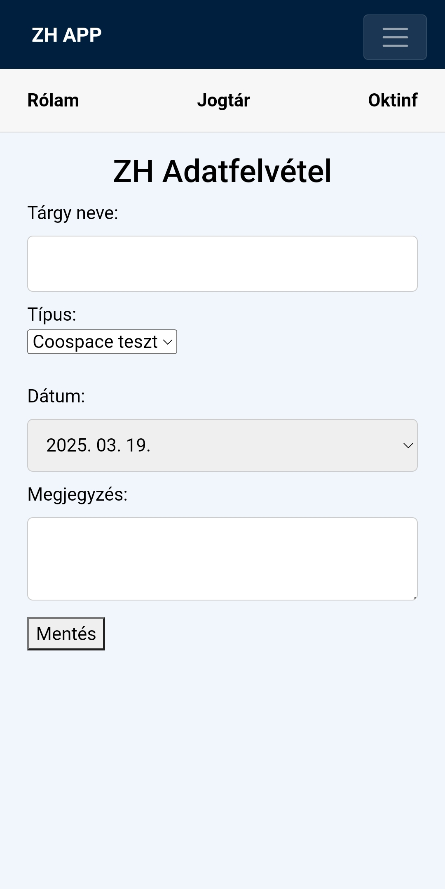
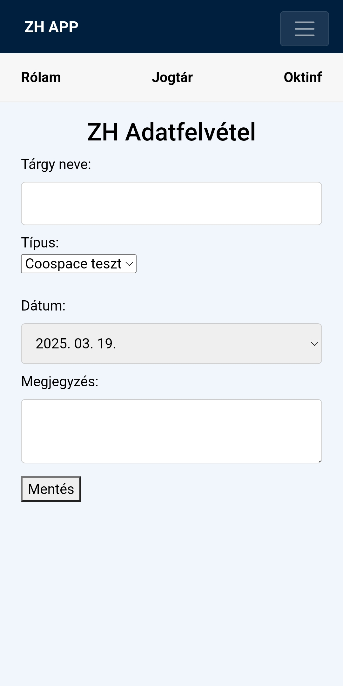

Projektjeim
Fezzo The Game


Fezzo The Game egy vizuális novella paródia, amelyben népszerű internetes személyiségek szerepelnek. A játékban egy alapvető harcrendszer található, valamint egy bal klikkel vezérelhető, lineáris párbeszéd-rendszer, amely a történet előrehaladását segíti. A projekt célja egy szórakoztató, humoros élmény nyújtása a játékosoknak.
ZH Applikáció
 


Ez egy ZH felvevő mobil alkalmazás (v1.2), amely segít a diákoknak nyomon követni a ZH időpontjaikat és felkészülni a vizsgákra. Az alkalmazás intuitív felülettel rendelkezik, lehetővé teszi a tárgyak és vizsgák könnyű hozzáadását, valamint értesítéseket küld a közelgő határidőkről.
Edzés és életvitel Applikáció


Egyszerű és személyre szabott étrendkövetés, étkezési naplózás, egészséges életmód támogatása. Az alkalmazás segít nyomon követni a napi edzéseket, étrendet és egészségügyi mutatókat. Különféle funkciók között megtalálható az edzéstervek létrehozása, étkezések naplózása, vízfogyasztás követése és testi adatok rögzítése.